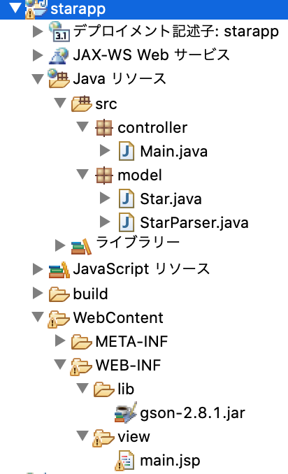

dummy source code
package model;
import java.io.Serializable;
public class Star implements Serializable{
private String enName;
private String jpName;
private String origin;
private String starImage;
public Star(){}
public String getEnName() {
return enName;
}
public void setEnName(String enName) {
this.enName = enName;
}
public String getJpName() {
return jpName;
}
public void setJpName(String jpName) {
this.jpName = jpName;
}
public String getOrigin() {
return origin;
}
public void setOrigin(String origin) {
this.origin = origin;
}
public String getStarImage() {
return starImage;
}
public void setStarImage(String starImage) {
this.starImage = starImage;
}
}
package model;
import java.io.IOException;
import java.io.InputStream;
import java.io.InputStreamReader;
import java.net.HttpURLConnection;
import java.net.MalformedURLException;
import java.net.URL;
import java.util.ArrayList;
import java.util.List;
import com.google.gson.Gson;
import com.google.gson.JsonArray;
import com.google.gson.JsonObject;
import com.google.gson.stream.JsonReader;
public class StarParser {
public List getList(String urlString){
//作成したいlistをnew
List list=new ArrayList<>();
//スコープをあげるためここで宣言
JsonReader reader=null;
HttpURLConnection con=null;
try {
//urlの文字列からURLインスタンスを作成
URL url=new URL(urlString);
//openConnectionで接続
con=(HttpURLConnection) url.openConnection();
//GETによるリクエスト
con.setRequestMethod("GET");
//データ取得
InputStream is=con.getInputStream();
//スプーンからコップで効率化
InputStreamReader isr=new InputStreamReader(is,"UTF-8");
//インプットストリームリーダーインスタンスからJsonReadrインスタンスを作成できる。
reader=new JsonReader(isr);
//GsonをnewしてfromJsonメソッドを用いてルート要素を取得する(今回ルートはオブジェクト)
JsonObject root=new Gson().fromJson(reader, JsonObject.class);
//root要素にあるresultプロパティを取得(配列)
JsonArray result=root.get("result").getAsJsonArray();
//配列とforは刺身と醤油。JsonArrayはsize()で要素数取得
for(int i=0;i list=parser.getList(url);
//viewで使う情報をリクエストスコープに詰める
request.setAttribute("list",list);
request.setAttribute("today",today);
request.setAttribute("hour",hour);
request.setAttribute("min",min);
request.setAttribute("lat",LAT);
request.setAttribute("lng",LNG);
//フォーワード
RequestDispatcher rd=request.getRequestDispatcher("/WEB-INF/view/main.jsp");
rd.forward(request, response);
}
}
<%@ page language="java" contentType="text/html; charset=UTF-8"
pageEncoding="UTF-8" import="java.util.*,model.*"%>
<%
List<Star> list=(List<Star>)request.getAttribute("list");
String today=(String)request.getAttribute("today");
String hour=(String)request.getAttribute("hour");
String min=(String)request.getAttribute("min");
String lat=(String)request.getAttribute("lat");
String lng=(String)request.getAttribute("lng");
%>
<!DOCTYPE html>
<html>
<head>
<meta charset="UTF-8"/>
<title>StarApp</title>
<style>
#container{
width:80%;
margin:0 auto;
}
.starBox{
padding-bottom:20px;
border-bottom:1px solid #aaa;
}
.imageBox img{
display:block;
width:100%;
}
</style>
</head>
<body>
<div id="container">
<h1>東京で見られる現在の星座</h1>
<table border="1">
<tr><th>日付</th><td><%=today %></td></tr>
<tr><th>時刻</th><td><%=hour %>時<%=min %>分</td></tr>
<tr><th>緯度</th><td><%=lat %></td></tr>
<tr><th>経度</th><td><%=lng %></td></tr>
</table>
<%if(list != null && list.size()>0){ %>
<%for(Star s:list){ %>
<div class="starBox">
<h2><%=s.getJpName() %>(<%=s.getEnName() %>)</h2>
<div class="imageBox">
<img src="<%=s.getStarImage() %>">
</div>
<h3>[由来]</h3>
<p><%=s.getOrigin() %></p>
</div>
<%} %>
<%} %>
</div>
</body>
</html>
解説:
今回のポイント

質問&自作問題投稿